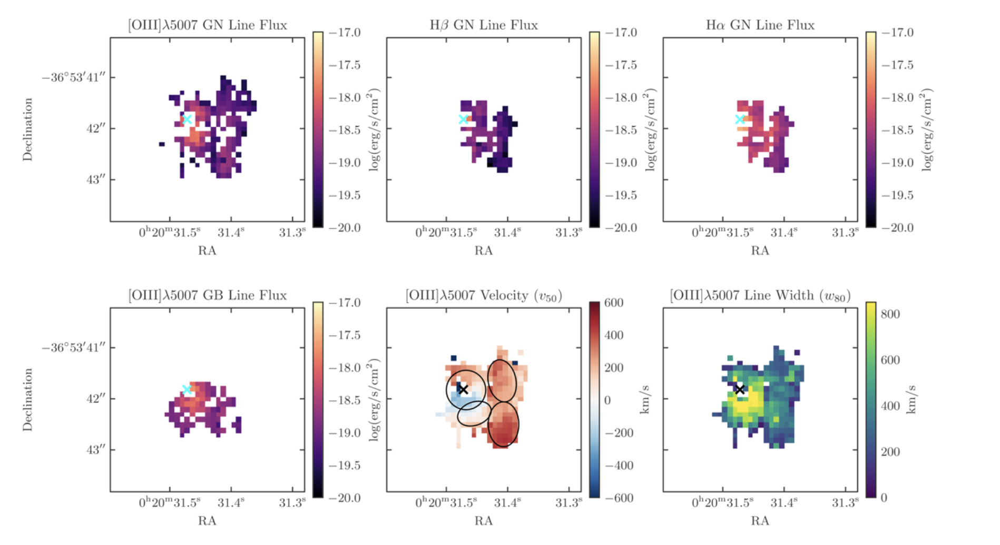

Abstract/brief description of each publication
3) GA-NIFS: Black hole and host galaxy properties of two z ≃ 6.8 quasars from the NIRSpec IFU, Marshall et al. (2023)
Aims: Integral field spectroscopy (IFS) with JWST NIRSpec will significantly improve our understanding of the first quasars, by providing spatially resolved, infrared spectroscopic capabilities that cover key rest-frame optical emission lines that have been previously unobservable.
Methods: Here we present our results from the first two z > 6 quasars observed as a part of the Galaxy Assembly with NIRSpec IFS (GA-NIFS) GTO programme, with DELS J0411-0907 at z = 6.82 and VDES J0020-3653 at z = 6.86.
Results: By observing the Hβ, [O III] λλ4959, 5007, and Hα emission lines in these high-z quasars for the first time, we measured accurate black hole masses, MBH = 1.85 −0.8+2 × 109 M⊙ and 2.9±2.4 × 109 M⊙, corresponding to Eddington ratios of λEdd = 0.8±0.5 and 0.4±0.2 for DELS J0411-0907 and VDES J0020-3653, respectively. These provide a key comparison for existing estimates from the more uncertain Mg II line. We performed quasar-host decomposition using models of the quasars' broad lines to measure the underlying host galaxies. We also discovered multiple emission line regions surrounding each of the host galaxies, which are likely companion galaxies undergoing mergers with these hosts. We measured the star formation rates, excitation mechanisms, and dynamical masses of the hosts and companions, measuring the MBH/Mdyn ratios at high z using these estimators for the first time. DELS J0411-0907 and VDES J0020-3653 both lie above the local black hole-host mass relation, and are consistent with the existing observations of z ≳ 6 quasar host galaxies with ALMA. We detected ionised outflows in [O III] λλ4959, 5007 and Hβ from both quasars, with mass outflow rates of 58±40 and 525±83 M⊙/yr for DELS J0411-0907 and VDES J0020-3653, much larger than their host star formation rates of < 33 and < 54 M⊙/yr, respectively.
Conclusions: This work highlights the exceptional capabilities of the JWST NIRSpec IFU for observing quasars in the early Universe.

Kinematic maps for VDES J0020–3653, after the subtraction of the quasar emission using the N&B subtraction technique. The top panels show the flux of the narrow component of the [O III] λ5007, Hβ, and Hα lines (GN), as fit by a Gaussian. The bottom left panel shows the flux of the broader (GB) component of the [O III] λ5007 line, a second Gaussian with a larger σ. The lower middle and right panels show our kinematic maps, showing the non-parametric central velocity of the line (v50; middle) and the line width (w80; right). As these are non-parametric, this combines both the GN and GB components.
2) GA-NIFS: A massive black hole in a low-metallicity AGN at z ∼ 5.55 revealed by JWST/NIRSpec IFS, Übler et al. (2023)
In this paper, we present rest-frame optical data of the compact z = 5.55 galaxy GS_3073 obtained using the integral field spectroscopy mode of the Near-InfraRed Spectrograph on board the James Webb Space Telescope. The galaxy's prominent broad components in several hydrogen and helium lines (though absent in the forbidden lines) and the detection of a large equivalent width of He IIλ4686, EW(He II) ∼20 Å, unambiguously identify it as an active galactic nucleus (AGN). We measured a gas phase metallicity of Zgas/Z⊙∼0.21−0.04+0.08 , which is lower than what has been inferred for both more luminous AGN at a similar redshift and lower redshift AGN. We empirically show that classical emission line ratio diagnostic diagrams cannot be used to distinguish between the primary ionisation source (AGN or star formation) for systems with such low metallicity, though different diagnostic diagrams involving He IIλ4686 prove very useful, independent of metallicity. We measured the central black hole mass to be log(MBH/M⊙)∼8.2 ± 0.4 based on the luminosity and width of the broad line region of the Hα emission. While this places GS_3073 at the lower end of known high-redshift black hole masses, it still appears to be overly massive when compared to its host galaxy's mass properties. We detected an outflow with a projected velocity ≳700 km s−1 and inferred an ionised gas mass outflow rate of about 100 M⊙ yr−1, suggesting that one billion years after the Big Bang, GS_3073 is able to enrich the intergalactic medium with metals.
 Integrated spectrum extracted from the central three by three spaxels in the wavelength range 2.86μm < λ < 4.85μm with flux in linear scale (top) and log scale (bottom). Several emission lines are present and indicated by vertical lines at the top We detect seven He I lines, He IIλ4686, Hβ, [O III]λλ4959, 5007, Hα, [N II]λλ6548, 6583, and [S ii]λλ6716, 6731. We also report the detection of [Ar IV]λ4711, [Ar IV]λ4740 and [Ar III]λ7136 (note that [Ar IV]λ4711 is blended with He Iλ4713).
BLR components are present in Hβ, Hα, He II, and the He I lines. In addition, an outflow component is present, best visible in the broadened, asymmetric line base of the [O III] doublet. We indicate the positions of possible coronal lines [Fe XVI], [Ca V], [Fe XIII], [Fe V], of the auroral line [N II]λ5755, and of another line at λ ∼ 7167.5Å the position of which is consistent with Si I, as grey dotted vertical lines in the bottom panel.
Integrated spectrum extracted from the central three by three spaxels in the wavelength range 2.86μm < λ < 4.85μm with flux in linear scale (top) and log scale (bottom). Several emission lines are present and indicated by vertical lines at the top We detect seven He I lines, He IIλ4686, Hβ, [O III]λλ4959, 5007, Hα, [N II]λλ6548, 6583, and [S ii]λλ6716, 6731. We also report the detection of [Ar IV]λ4711, [Ar IV]λ4740 and [Ar III]λ7136 (note that [Ar IV]λ4711 is blended with He Iλ4713).
BLR components are present in Hβ, Hα, He II, and the He I lines. In addition, an outflow component is present, best visible in the broadened, asymmetric line base of the [O III] doublet. We indicate the positions of possible coronal lines [Fe XVI], [Ca V], [Fe XIII], [Fe V], of the auroral line [N II]λ5755, and of another line at λ ∼ 7167.5Å the position of which is consistent with Si I, as grey dotted vertical lines in the bottom panel.